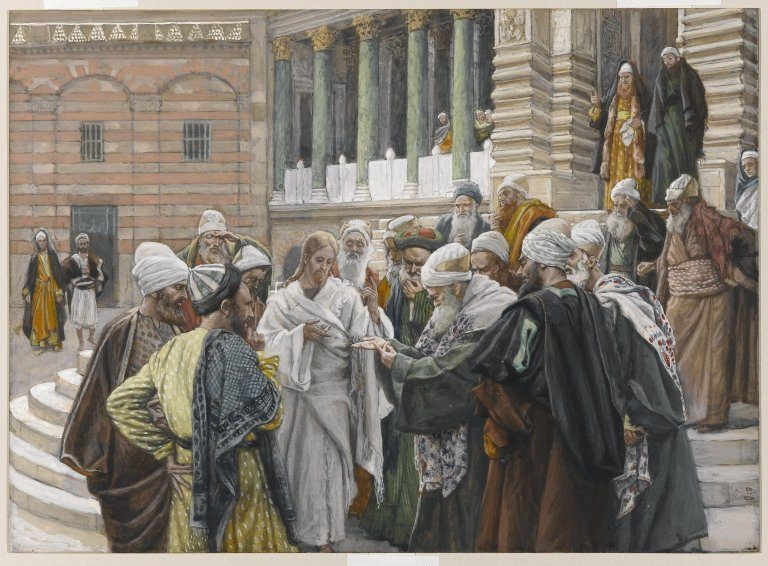

Lucas 20 — La Traducción Mister

Tissot apiña a los interrogadores muy cerca de Jesús, hombro con hombro, con el dedo de uno de ellos apuntando directamente al denario que sostiene —el cuadro pone en escena la propia pregunta del v24, «¿de quién tiene la imagen y la inscripción?», como un acoso físico y no solo verbal. Jesús viste solo, en blanco liso y sin adornos, frente a los mantos y chales con capas y estampados que lo rodean, el mismo contraste visual que usa Tissot en otras partes de esta serie para distinguirlo de una multitud hostil.
_-_James_Tissot.jpg){kind=link}
Notas del traductor — versículo por versículo
⭐⭐ La trampa que tiende Jesús está hecha de los dos mismos cuernos de los que sus interrogadores no pueden escapar de ninguna manera. «Del cielo» los obliga a explicar por qué nunca creyeron a Juan; «de los hombres» arriesga una lapidación de parte de una multitud «convencida de que Juan era un profeta». El narrador deja que el lector vea el cálculo suceder en tiempo real (v5–6) antes de que los líderes hablen, de modo que su respuesta final —«no sabemos»— se escucha por lo que es: no ignorancia, sino una negativa a comprometerse en público. Las propias versiones de Mateo y Marcos de este mismo intercambio siguen la lógica idéntica (Mateo 21:23–27; Marcos 11:27–33, ambos ya en estas páginas); los tres Evangelios sinópticos dejan que la propia opinión de la multitud sobre Juan sea lo que atrapa.
⚠ Jesús en realidad nunca se niega a responder —hace que la negativa a responder SEA la respuesta. «Tampoco yo les digo» es en sí misma una afirmación: que la autoridad detrás del bautismo de Juan y la autoridad detrás de lo que Jesús hace en el templo se sostienen o caen juntas, exactamente la conexión que los líderes no pueden permitirse hacer en voz alta.
⭐⭐⭐ Lucas nombra un destinatario distinto para esta parábola del de los líderes a quienes, según la propia lógica de la historia, en realidad va dirigida. «Comenzó a contarle al pueblo esta parábola» (v9, pros ton laon) —no a los principales sacerdotes y escribas que acaban de terminar de interrogarlo. El relato de Marcos de la parábola idéntica tiene en cambio a Jesús hablando «a ellos» (Marcos 12:1, ya en estas páginas), los mismos líderes nombrados dos versículos antes en la propia secuencia de Marcos; la introducción de Mateo está dirigida igualmente al mismo grupo que la pregunta sobre la autoridad justo antes (Mateo 21:33, ya en estas páginas). Solo Lucas pone a la multitud entre Jesús y sus objetivos, que es exactamente por qué el v19 tiene que explicar lo que los otros dos Evangelios dejan implícito: los líderes «sabían que había dicho esta parábola contra ellos» —una parábola que escucharon de oídas, no que se les dijo en la cara.
⚠ El orden de la muerte del hijo y su expulsión de la viña no es el mismo en los tres relatos sinópticos, y esta traducción no suaviza el desacuerdo. Aquí, como en Mateo, los labradores «lo echaron fuera de la viña y lo mataron» (v15) —expulsado con vida, muerto afuera (compárese Mateo 21:39, ya en estas páginas). El propio relato de Marcos invierte las dos acciones: «lo mataron, y lo echaron fuera de la viña» (Marcos 12:8, ya en estas páginas) —primero la muerte, luego el cuerpo negado a la sepultura. Lucas y Mateo coinciden contra Marcos aquí; ninguna de las tres tradiciones manuscritas intenta hacer coincidir a las otras dos.
⭐⭐ El dicho de la piedra citado aquí no tiene disputa, donde la propia copia de Mateo de la misma imagen sí la tiene. La piedra rechazada del Salmo 118:22–23 que llega a ser «cabeza del ángulo» (v17) está en todo testigo de este capítulo sin cuestión. El propio paralelo de Mateo añade un segundo versículo sobre la piedra inmediatamente después —caer sobre la piedra o que ella caiga sobre uno (Mateo 21:44, ya en estas páginas)— y ese versículo ADICIONAL es exactamente el que un pequeño grupo de testigos tempranos omite, y algunos editores lo juzgan una importación a Mateo desde este mismo pasaje (v18). La propia copia de Lucas de esa segunda imagen de la piedra, aquí, no lleva ninguna duda semejante en el aparato crítico —sea cual sea el hogar original de la imagen, el texto de Lucas de ella es el más seguro de los dos.
⚠ La propia frase final del v20 responde una pregunta que la historia no hace en voz alta: después de una parábola y una Escritura que los acusan a ambos por nombre, ¿por qué los líderes no lo arrestan de inmediato? No arrepentimiento, sino un miedo práctico —«temieron al pueblo»— el mismo cálculo que los detuvo al comienzo de este mismo intercambio (v6, v19).
⚠ El estante inglés varía en el verbo final del v18 sin discrepar sobre su violencia: la KJV lee que la piedra lo ‘grind him to powder’ (lo molera hasta hacerlo polvo), la ASV ‘scatter him as dust’ (lo esparcirá como polvo), y la NWT 1984 ‘pulverize him’ (lo pulverizará) —tres verbos ingleses distintos, cada uno buscando una imagen propia de la misma destrucción total.
⭐⭐⭐ «Espías» traduce una palabra que aparece exactamente una vez en todo el Nuevo Testamento. Véase la entrada del diccionario egkáthetos: un hapax legomenon construido sobre un verbo que significa plantar o sentar en emboscada, y que describe a hombres deliberadamente «sentados dentro» de la multitud para parecer interrogadores honestos mientras trabajan para la acusación. Los relatos paralelos de Mateo y Marcos de esta misma trampa van directo a los discípulos de los fariseos y los herodianos (Mateo 22:16; Marcos 12:13, ya en estas páginas) sin nombrar nunca el engaño mismo; solo el narrador de Lucas le dice al lector de antemano que la propia piedad de los interrogadores es teatro —«fingiendo ser justos»— antes de que se pronuncie una palabra de su halagadora línea de apertura.
⭐⭐ La propia palabra de Lucas para el impuesto en juego es más sencilla, y menos romana, que la de Mateo. El griego de Lucas pregunta por phóros, la palabra corriente para el tributo pagado por un pueblo sometido a un poder gobernante; el propio paralelo de Mateo pregunta en cambio por el kênsos (Mateo 22:17, ya en estas páginas), un préstamo directo del latín census, que nombra por su nombre el específico y odiado impuesto de capitación romano. Marcos conserva el préstamo de Mateo (Marcos 12:14, ya en estas páginas). Lucas, escribiendo para un público de habla griega más amplio y menos fluido en el vocabulario burocrático romano, recurre a la palabra sencilla en vez de la técnica —el mismo impuesto, tres Evangelios, dos registros distintos de griego para nombrarlo.
⚠ La respuesta no especifica cuánto le pertenece a cada lado, y esta traducción deja ese silencio exactamente donde lo deja el griego. Véase la entrada del diccionario apodídomi sobre la lógica propia del prefijo: la moneda ya lleva la imagen de César, así que devolverla le regresa su propia propiedad. Lo que NO queda establecido es el tamaño de la parte de César frente a la de Dios —leído como dos esferas separadas, o como la afirmación de que, puesto que todo lleva en última instancia la imagen de Dios, la propia porción de César es el cambio pequeño, el dicho admite cualquiera de las dos lecturas y esta traducción reporta ambas en vez de elegir.
⚠ Una tradición manuscrita posterior importa las propias palabras de Mateo para este mismo momento dentro del relato de Lucas, y el texto fuente de esta traducción no trae la importación. Después de «él, dándose cuenta de su astucia» (v23), un texto posterior ampliamente copiado añade «¿Por qué me tientan?» —la pregunta idéntica, sin «hipócritas», que el Jesús de Mateo hace en este mismo momento de forma nativa, con las propias palabras de Mateo (Mateo 22:18, ya en estas páginas). El texto más temprano que sigue esta traducción tiene a Jesús responder a la trampa solo con la moneda, sin un reproche verbal primero —una respuesta más dura y comprimida que la versión con sabor a Mateo que copistas posteriores suministraron.
⚠ El verbo que describe la propia postura de los saduceos sobre la resurrección está en sí mismo disputado entre las ediciones, y esta traducción sigue la lectura más dura y más directa. El aparato se divide: el propio texto crítico de este capítulo y la tradición bizantina coinciden en leer antilégontes, negando activamente la resurrección, mientras que una edición crítica de una generación anterior (Westcott-Hort, seguida por Tregelles) imprime el más llano légontes, simplemente «diciendo» que no la hay. Esta traducción sigue la lectura que imprime su propio texto fuente. El rechazo de los saduceos a la resurrección queda confirmado independientemente por la propia entrada de la enciclopedia sobre los saduceos (véase la nota de esa página sobre Josefo), así que el verbo más fuerte no inventa una controversia —nombra una que este grupo es conocido, por otras fuentes, de haber sostenido activamente.
⭐⭐⭐ «Semejantes a los ángeles» traduce un verdadero hapax neotestamentario —una palabra acuñada, según la evidencia que sobrevive, exactamente para esta frase. Véase la entrada del diccionario isángelos: ísos (igual) fusionado con ángelos (mensajero, ángel) en un solo compuesto que no aparece en ningún otro lugar de todo el Nuevo Testamento ni en ningún texto griego claramente anterior. Las propias versiones de Mateo y Marcos de este mismo dicho usan en cambio una comparación ordinaria —«como [hôs] los ángeles de Dios en el cielo» (Mateo 22:30; Marcos 12:25, ya en estas páginas)— dos palabras corrientes haciendo el trabajo que Lucas comprime en una que, según la evidencia que tenemos, no existía como palabra antes de que esta frase la necesitara.
⭐⭐⭐ La propia prueba de la zarza de Lucas nunca deja que Dios hable en primera persona —las de Mateo y Marcos, ambas, sí lo hacen. Mateo y Marcos citan ambos las propias palabras de Dios a Moisés directamente: «Yo soy el Dios de Abrahán…» (Mateo 22:32; Marcos 12:26, ambos ya en estas páginas). El griego de Lucas en cambio permanece en la propia voz del narrador todo el tiempo: Moisés, en la zarza, «llama [kýrios] al Dios de Abrahán, y Dios de Isaac, y Dios de Jacob» —un informe sobre un título usado, no una cita de la voz divina misma. Como el referente aquí es inconfundiblemente el Dios que Moisés encontró en la zarza y no Jesús, esta traducción lee el kyrios desnudo como sustituto del nombre divino e imprime «Jehová», la misma elección hecha donde la propia entrada del diccionario de kyrios encuentra la palabra haciendo ese trabajo de fórmula del Antiguo Testamento en vez de nombrar a Jesús. ⚠ La KJV y la ASV mantienen ambas el genérico «the Lord» aquí en vez de un nombre propio, ya que ninguna de las dos versiones del estante imprime el nombre divino dentro de la narración neotestamentaria en absoluto.
⚠ «Los hijos de esta edad» conserva una palabra que esta traducción ya separó de su casi sinónimo. Véase la entrada del diccionario aión: el griego de Lucas dice tou aiônos toutou, esta EDAD, una época con carácter, no tou kósmou toutou, este mundo físico (véase la entrada kósmos) —la misma distinción que busca el propio «este sistema de cosas» de la TNM 1987 en este versículo, incluso donde el más familiar ‘this world’ (KJV, ASV, en inglés) lo difumina de vuelta al sentido físico ordinario.
⭐⭐ Lucas nunca vuelve a la pregunta sobre el «mandamiento más grande» que precede inmediatamente a este mismo acertijo tanto en Mateo como en Marcos —porque Lucas ya contó ese intercambio, en otra escena, seis capítulos antes. Mateo y Marcos colocan ambos la pregunta de un experto en la ley sobre el mandamiento más grande justo antes del acertijo sobre el hijo de David, en esta misma secuencia de confrontaciones en el templo (Mateo 22:34–40; Marcos 12:28–34, ambos ya en estas páginas). Lucas no tiene ese episodio aquí en absoluto —su propia versión de un experto en la ley poniendo a prueba a Jesús con esos mismos dos mandamientos, amor a Dios y amor al prójimo, ya sucedió en el camino, enmarcando la parábola del buen samaritano (Lucas 10:25–28, ya en estas páginas). En vez de contar el mismo intercambio dos veces, Lucas pasa directamente de la pregunta sobre la resurrección al acertijo sobre el hijo de David —cuatro confrontaciones en la propia versión de Lucas del ciclo, donde Mateo y Marcos tienen cinco.
⭐⭐⭐ Lucas conserva el propio sustantivo del Salmo donde Mateo y Marcos lo parafrasean —y tres versiones del estante, verificadas, coinciden con Lucas, no con ellos. El hebreo del Salmo 110:1 y su traducción griega dicen ambos hypópodion, un ESTRADO, para lo que se vuelven los enemigos; la propia redacción idéntica de Mateo y Marcos de esta misma cita dice en cambio «debajo de tus pies» (Mateo 22:44; Marcos 12:36, ambos ya en estas páginas) —la misma idea, un sustantivo perdido. La KJV, la ASV y la NWT 1984 conservan todas «footstool» (estrado) en este versículo, así que la propia copia de Lucas de la cita, en esta sola palabra, se alinea con esas tres en contra de la propia traducción de este sitio de sus dos paralelos sinópticos.
⚠ Como en Marcos 12:35–37 y Mateo 22:44 (ambos ya en estas páginas), la única línea hebrea detrás de esta cita nombra dos palabras distintas para «señor» —YHVH y adoní— que el griego colapsa en un solo kyrios repetido. Esta traducción conserva la elección ya hecha en esos dos paralelos: «Jehová dijo a mi Señor», ya que la primera aparición cita el propio nombre divino de la Biblia hebrea y la segunda nombra al propio señor de David, una distinción que el hebreo conserva y que el griego aquí no puede mostrar por sí solo. ⭐ La propia tipografía de la KJV coincide sin querer: imprime «The LORD said unto my Lord», mayúsculas pequeñas para la primera y tipo ordinario para la segunda —la misma distinción que esta traducción traza con dos palabras distintas, trazada ahí con dos mayúsculas distintas de la misma palabra.
⚠ El acertijo mismo queda tan abierto aquí como en la propia versión de Marcos: cómo puede el Cristo ser a la vez hijo de David por descendencia y propio Señor de David por dirección se pregunta y nunca se responde en la página, en ninguno de los tres relatos sinópticos. La reacción de la multitud —encantada, según Marcos; el silencio de los líderes, según Mateo y este Evangelio por igual— es la única respuesta registrada que recibe el acertijo.
⭐⭐⭐ El cargo que cierra este capítulo es la acusación idéntica que el Jesús de Marcos hace contra la misma clase de hombres, palabra por palabra. «Devoran las casas de las viudas, y por pretexto hacen largas oraciones» coincide casi exactamente con la propia versión de Marcos de esta advertencia (Marcos 12:40, ya en estas páginas) —el cargo concreto más duro que cualquiera de los dos Evangelios hace contra los escribas, peor que el amor a las ropas y los saludos y los primeros asientos nombrados justo antes, porque nombra a una víctima en vez de una vanidad.
⚠ Algunos manuscritos posteriores añaden una frase casi idéntica a los propios ayes de Mateo contra los escribas, y los testigos más tempranos no la tienen ahí. Las palabras que algunas ediciones imprimen como Mateo 23:14, condenando a quienes «devoran las casas de las viudas», faltan en los manuscritos mateanos más tempranos y no se quedan quietas en los que sí la llevan —algunas tradiciones la colocan antes del material circundante, otras después, la marca de una línea importada de otro lugar en vez de original a esa página. Su hogar más seguro en el registro sinóptico es aquí, y en Marcos 12:40 (ambos ya en estas páginas), donde la frase no tiene disputa en los manuscritos.
⚠ Lucas le da a toda esta advertencia una audiencia más estrecha y más callada de la que le da Mateo. El paralelo de Mateo es una denuncia pública de un capítulo entero, dirigida por igual «a las multitudes y a sus discípulos» (Mateo 23:1, ya en estas páginas); aquí se dice «a los discípulos», aunque se dice que «todo el pueblo» está escuchando (v45) —una palabra privada que el público alcanza a oír, en vez de un discurso público.
Patrones que conviene seguir
Donde esta traducción mantiene las palabras exactas / distintas: Jehová para el kyrios desnudo, de fórmula del Antiguo Testamento, del v37 (Moisés en la zarza), separado del Señor llano del propio acertijo de los vv42–44, donde las dos palabras hebreas distintas para «señor» ya han colapsado en una sola palabra griega antes de que la traducción siquiera la vea; tributo para el propio phóros llano de Lucas (v22), separado del préstamo latín kênsos de Mateo y Marcos, el mismo impuesto romano nombrado en dos registros distintos de griego; y estrado para hypópodion (v43), conservado donde Mateo y Marcos parafrasean ambos el sustantivo propio del Salmo.
Ecos pagados. Preguntado con qué autoridad actúa, Jesús responde a una pregunta hostil con una contrapregunta sobre el propio bautismo de Juan —exactamente el eco que la propia nota de cierre de Lucas 19 sembró (19:47–48, ya en estas páginas). Y la parábola de los labradores de la viña que sigue de inmediato es la historia que el último versículo de ese capítulo ya había anunciado que venía, contra los mismos líderes que ese versículo nombró.
Ecos sembrados. El cargo de que los escribas «devoran las casas de las viudas» (v47) se responde dos versículos después en el siguiente capítulo con una sola viuda pobre que da todo lo que tiene en el arca de ofrendas del templo (21:1–4, ya en estas páginas) —lo que la clase escriba toma y lo que ella da, puestos uno junto al otro exactamente como los pone Marcos. Y el templo mismo, elogiado por admiradores por su propia cantería en la escena siguiente, recibe el anuncio de que no quedará una piedra sobre otra (21:5–6, ya en estas páginas) —el mismo templo dentro del cual se han desarrollado estas cuatro confrontaciones.
A continuación en la secuencia: Lucas 21 —a unos admiradores de la cantería del templo se les dice que no quedará una piedra sobre otra; Jesús predice guerras, terremotos, persecución y la destrucción de Jerusalén, y describe su propio regreso en gloria; y las dos moneditas de una viuda pobre pesan más, en su propio veredicto, que cada gran regalo dejado caer en el arca de ofrendas junto a ellas.